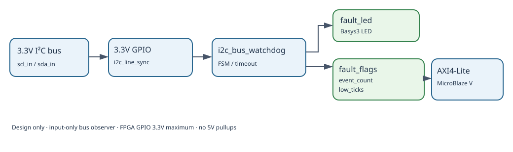

CAPSTONE-12 — I²C 버스 응답 지연·장애 감시기
자체 창작 설계형 과제. 신규 RTL·TB·AXI·합성·보드 실증 미실시. I²C 버스는 3.3V 입력 전용으로 수동 감시합니다.
1. 시각화 — 입력→인터페이스→Controller→출력·상태

2. 부품·전원·신호
입력
3.3V I²C SCL/SDA (읽기 전용)
Controller
i2c_bus_watchdog
출력
fault_led, fault_flags
확장
AXI4-Lite → MicroBlaze V
| 신호 | 의미 |
|---|---|
| scl_in / sda_in | 입력 전용, 3.3V 이하 |
| sample_tick | 10µs 간격 |
| fault_flags[2:0] | SCL LOW / SDA LOW / STOP 누락 |
| event_count[15:0] | 포화 이벤트 수 |
| low_ticks[15:0] | 연속 LOW 시간 |
3. FSM 및 제어정책
| 상태 | 조건/전이 |
|---|---|
| IDLE | START→ACTIVE, LOW timeout→FAULT |
| ACTIVE | STOP→IDLE, repeated START 유지, timeout→FAULT |
| FAULT | LED ON, clear + 두 선 HIGH 안정 시 IDLE |
SCL/SDA LOW 25ms, START 이후 STOP 누락 100ms는 교육용 설정값이며 I²C 표준의 보편적 장애 기준이 아닙니다. 동시 Set/Clear는 Set 우선.
4. 구현 순서
- 기판별 풀업 전압 측정과 3.3V 입력 승인
- i2c_line_sync와 START/STOP 검출
- i2c_bus_watchdog FSM·타이머·카운터
- Self-checking TB 및 경계·동시 이벤트 검증
- Basys3 LED 실물 확인
- AXI4-Lite 레지스터와 MicroBlaze V 드라이버 확장
5. 시험 시나리오 (기대 결과, 실행 전)
| ID | 입력 | 기대 |
|---|---|---|
| T01 | Reset, SCL/SDA HIGH | IDLE, LED off |
| T02 | START → STOP | normal |
| T03 | Repeated START → STOP | normal |
| T04 | SCL LOW 24.99ms | no fault |
| T05 | SCL LOW 25.01ms | fault bit0 |
| T06 | SDA LOW 25.01ms | fault bit1 |
| T07 | START without STOP >100ms | fault bit2 |
| T08 | persistent LOW | one event |
| T09 | clear + fault | set priority |
| T10 | both LOW | two bits, one event |
| T11 | counter saturation | 0xFFFF |
| T12 | Reset in FAULT | clear state |
6. 출처·안전·검증 단계
I²C 모듈 자료 · 적대적 검증 기록 · SoC 확장. 공개 예제의 코드·이미지를 복제하지 않은 자체 설계이며, 외부 원본의 재배포 라이선스를 확인된 것으로 표시하지 않습니다.
Basys3 GPIO 3.3V 초과 금지, 5V 풀업 직접 연결 금지. XADC는 사용하지 않습니다. 문서화 완료와 RTL Simulation, Synthesis, Timing, Board Test는 별개의 검증 단계입니다.